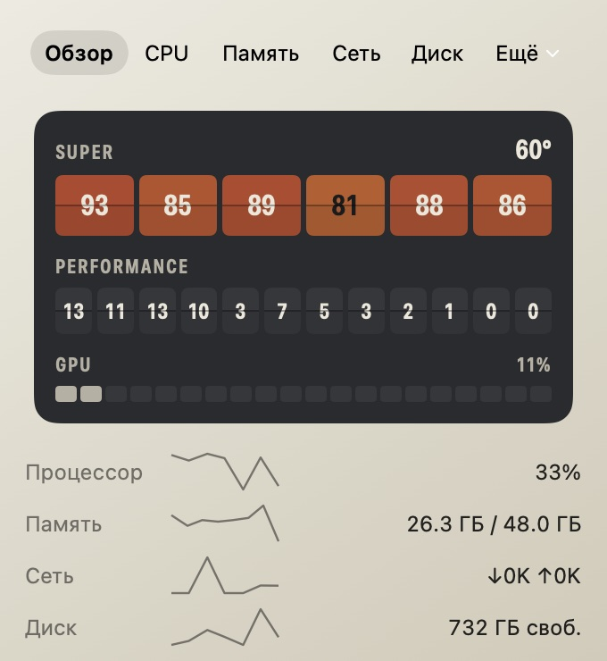

Видно, какие ядра греются. Прямо в строке меню.
StatusApp рисует кристалл вашего Mac: кластеры ядер и GPU. Каждое ядро подсвечено по своей нагрузке.
8%
Симуляция M5 Pro: 6 Super и 12 Performance ядер, 20-ядерный GPU. Табло обновляется раз в 2 секунды, как приложение с открытой панелью.
Цвет означает только нагрев
В StatusApp нет декоративных цветов. Тёплый оттенок всегда говорит о нагрузке или температуре, и чем он ближе к красному, тем горячее.
При срабатывании приходит системное уведомление, а значение окрашивается в жар. Пороги и задержки меняются в настройках.
Щёлкните по значку, и откроется панель
Пять вкладок под рукой, ещё две в меню «Ещё»: сенсоры и процессы по CPU или памяти.

Настоящие снимки панели в светлом оформлении.
Легче того, что он измеряет
- Процессор в простое
- Память
- Система
- macOS 26 Tahoe или новее
- Процессор
- Apple Silicon. На Intel работает без температур
- Цена
- Бесплатно
- Подпись
- Developer ID, проверено Apple
- Язык приложения
- Русский
Замер на MacBook Pro с M5 Pro при закрытой панели. Пока панель закрыта, температура опрашивается раз в 15 секунд, при открытой — раз в 2 секунды.
Скачать StatusApp
Откройте DMG и перетащите StatusApp в «Программы». Значок появится в строке меню, а Dock останется чистым.